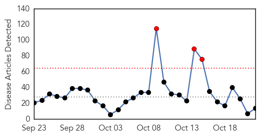
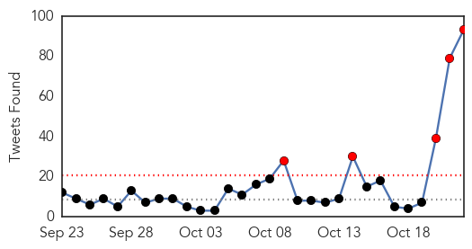

Ebola
30-Day Web Trend
3 alerts, 0 warnings

30-Day Twitter Trend
5 alerts, 0 warnings

Article Locations
Article Confidences

Top Articles:
- 0.993
- Nurse Kaci Hickox who was quarantined over Ebola fears sues Christie
- 0.932
- US nurse quarantined over Ebola fears to sue presidential hopeful Chris Christie
- 0.909
- Maine nurse suing Gov. Chris Christie for three-day quarantine during Ebola crisis
- 0.888
- Nurse quarantined over Ebola fears sues Gov. Chris Christie
- 0.887
- Kaci Hickox sues Chris Christie for over $250,000 in damages
- 0.842
- Nurse quarantined over Ebola fears sues Gov. Chris Christie
- 0.831
- Nurse quarantined in U.S. over Ebola fears sues Chris Christie
- 0.819
- Nurse quarantined over Ebola fears sues Gov. Chris Christie
- 0.768
- Nurse quarantined over Ebola fears sues Gov. Chris Christie
- 0.760
- Nurse quarantined over Ebola fears sues Gov. Chris Christie - MyNorthwest
- 0.726
- Nurse quarantined over Ebola fears sues Gov. Chris Christie
- 0.696
- Quarantined nurse sues Christie
- 0.681
- Nurse quarantined over Ebola fears sues Gov. Chris Christie
- 0.567
- Kaci Hickox, Maine Nurse Quarantined in Ebola Scare, Sues New Jersey Gov. Chris Christie
Top Tweets:
- 1.000
- Ebola nurse now suffering from meningitis, not virus relapse - https://t.co/rmrtp6a6dy ebola
- 0.995
- Ebola caused meningitis in Scottish nurse - https://t.co/CUjDebqfUN ebola
- 0.994
- British nurse who had Ebola has meningitis - https://t.co/86HoHbqjoC ebola
- 0.993
- Sierra Leone Struggles With Ebola Survivors' Health Complications - https://t.co/1E6Znu8XJG ebola
- 0.993
- Mystery deaths in Sierra Leone spread fear of Ebola relapses - https://t.co/K1VlTsZ1mQ ebola
- 0.993
- Mystery deaths in Sierra Leone spread fear of Ebola - https://t.co/j0puUgXIdl ebola
- 0.989
- Oct. 29 Symposium: Ebola, The Disease and Immune Privilege - https://t.co/Fn3PzhOCtx ebola
- 0.989
- 'Unprecedented' Ebola Case Causes Meningitis In Scottish Nurse - https://t.co/Q8zubX2LA6 ebola
- 0.988
- uk ebola nurse diagnosed with meningitis in bizarre twist - https://t.co/mDJ35EP1kW ebola
- 0.987
- Ebola Situation Report - 21 October 2015 - https://t.co/9OTsowODlb ebola
- 0.986
- Top US Ebola doctor: Country not ready for next outbreak - https://t.co/5UQsvxoetx ebola
- 0.985
- UK Nurse With Ebola Improving - WebMD https://t.co/Q211Wp9g5a ebola EVD
- 0.984
- UK Nurse With Ebola Improving - https://t.co/sXKrVF1qC2 ebola
- 0.982
- UK Ebola nurse condition 'significantly' better - https://t.co/grPU6MowPc ebola
- 0.981
- UK Ebola patient given Gilead's experimental anti-viral - https://t.co/NtEDgBG05j ebola
- 0.980
- Gilead's GS-5734 given to UK Ebola patient - https://t.co/yKP4H2497W ebola
- 0.978
- Hardly Anyone Really Dresses As Ebola Nurses Or Pizza Rats For Halloween - The Consumerist https://t.co/2ncVqVNSDx ebola EVD
- 0.977
- THE EBOLA SCARE IN NIGERIA - https://t.co/uBZpB2HFyH ebola
- 0.977
- Nurse to sue Christie administration over N.J. Ebola quarantine - https://t.co/XA0oRajo97 ebola
- 0.977
- As Ebola Leaves West Africa, Why Are Resources Leaving Too? - https://t.co/p8qhVcS5vg ebola
- 0.976
- With the recent cases of Ebola relapse and post-complications, Nigeria is set ... - Ventures Africa https://t.co/vUFhT5oMge ebola EVD
- 0.976
- Turns Out The Ebola Virus Can Be Sexually Transmitted - https://t.co/Ia0A3iaCpZ ebola
- 0.975
- Turns Out The Ebola Virus Can Be Sexually Transmitted - Gizmodo Australia https://t.co/kCxld2qgyt ebola EVD
- 0.973
- Scottish Ebola nurse 'recovering' - https://t.co/k0ENezpKYl ebola
- 0.969
- Possible case of Ebola relapse raises questions - https://t.co/cDpaAIYsOn ebola
- 0.969
- As Ebola Leaves West Africa, Why Are Resources Leaving Too? - Huffington Post https://t.co/dqS9SR7VEp ebola EVD
- 0.968
- UK doctors say nurse suffering Ebola relapse has improved - https://t.co/jHtVNYElgz ebola
- 0.967
- Semen as a Long-Term Reservoir of Ebola Virus - https://t.co/JQ6KukXYGS ebola
- 0.967
- How to cure Ebola - https://t.co/aUqITI7P1d ebola
- 0.966
- us bioweapons scientists puzzled at case of uk ebola nurse - https://t.co/INIi3GkpRh ebola
- 0.965
- Possible case of Ebola relapse raises questions - CBS News https://t.co/ZhhklGhQD4 ebola EVD
- 0.965
- My experience of the Ebola crisis in Sierra Leone - https://t.co/GsNG335dpY ebola
- 0.959
- Nurse Quarantined During Ebola Panic Sues Chris Christie - https://t.co/0A0kGwQQw8 ebola
- 0.950
- Queen medal for Frimley Park Hospital Ebola scientists - https://t.co/8j3vpxVCo4 ebola
- 0.950
- Preliminary Study Results Show Persistence of Ebola Virus in Body Fluids - https://t.co/X0NHr949Pp ebola
- 0.946
- Why Billions in Foreign Aid Failed to Prevent Ebola Outbreak - https://t.co/CGE6ffpTcy ebola
- 0.944
- Long recovery ahead for ebola nurse - https://t.co/KkksJRCOAb ebola
- 0.942
- Scottish nurse suffering Ebola relapse improves significantly - https://t.co/MNlyZG5PS8 ebola
- 0.941
- Gilead Provides Update on Investigational Compound, GS-5734, for the Treatment of Ebola Virus ... - https://t.co/vatQAEzR81 ebola
- 0.939
- Nurse Quarantined in New Jersey Amid Ebola Scare Sues Christie, Health Officials Over Alleged ... - https://t.co/kZyV0TSZOQ ebola
- 0.937
- Kaci Hickox sues New Jersey over Ebola quarantine - https://t.co/avfa3gPtu1 ebola
- 0.932
- Gilead discloses development of experimental Ebola drug GS-5734 - https://t.co/66NsArCA6u ebola
- 0.931
- Ebola Nurse to Sue New Jersey State - https://t.co/XJa73ieGXb ebola
- 0.931
- Ebola Nurse to Sue New Jersey State - Daily Beast https://t.co/oGqzUGmbcH ebola EVD
- 0.930
- Nurse quarantined in Ebola scare sues New Jersey - CBS News https://t.co/O0UJBR1APl ebola EVD
- 0.929
- Nurse quarantined in Ebola scare sues New Jersey - https://t.co/ZypiyZz56h ebola
- 0.929
- Nurse Treated For Complications Of Ebola Making "Significant" - https://t.co/0cKL8vTDX1 ebola
- 0.928
- Nurse Kaci Hickox quarantined after aiding Ebola patients sues Christie - https://t.co/8pJ5MPml2a ebola
- 0.923
- Ebola reporting earns journalist award from University of Northampton - https://t.co/VFkiDWLGWA ebola
- 0.922
- New Clues Into Ebola as Ill Nurse Improves - https://t.co/g2vViAzLmv ebola
Showing top 50 tweets...
Hepatitis
30-Day Web Trend
4 alerts, 6 warnings
30-Day Twitter Trend
0 alerts, 0 warnings
Article Locations

Article Confidences

Top Articles:
Top Tweets:
-
No tweets found for Oct 22, 2015